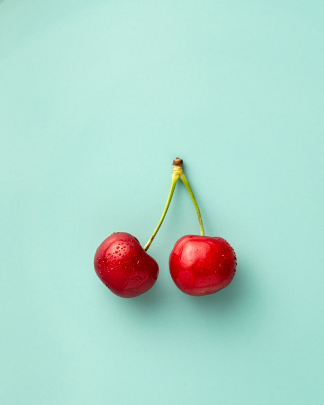

A cherry is the fruit of many plants of the genus Prunus, and is a fleshy drupe (stone fruit).
Commercial cherries are obtained from cultivars of several species, such as the sweet Prunus avium and the sour Prunus cerasus. The name 'cherry' also refers to the cherry tree and its wood, and is sometimes applied to almonds and visually similar flowering trees in the genus Prunus, as in "ornamental cherry" or "cherry blossom". Wild cherry may refer to any of the cherry species growing outside cultivation, although Prunus avium is often referred to specifically by the name "wild cherry" in the British Isles.
-home-